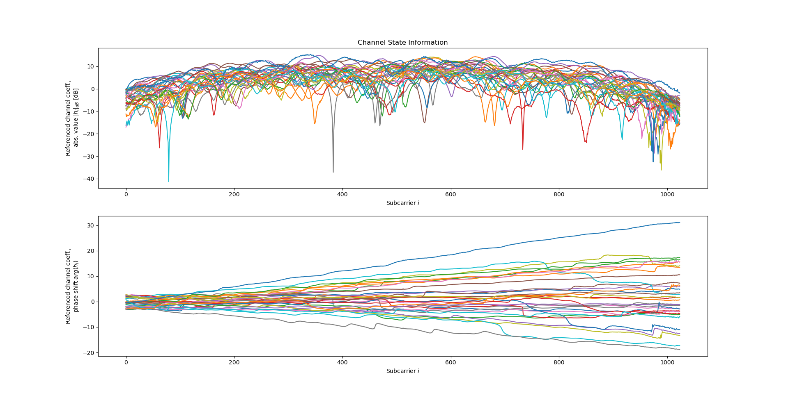
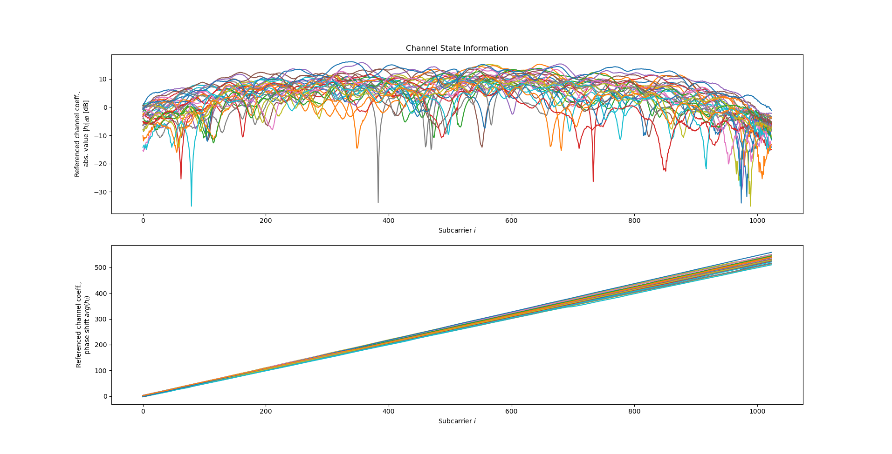

Don't worry, the old datasets are still there, so you can still easily reproduce previous results.
If you have existing code with hardcoded download links to .tfrecords files (as in our other tutorials),
these will still refer to the same, previous dataset version.
If you want to obtain an old version of a file, you can do so via DaRUS:
.tfrecords files.However, there is really no need to use the previous dataset versions anymore, the new versions should be better in every way. If your code does not work with "rev2" datasets, it is almost certainly due to unexpectedly high reported time offsets:

This is probably the kind of frequency-domain CSI plot that you are used to seeing. Note how the phase, when plotted as a function of the subcarrier index (frequency), has a more or less constant (yet small) slope. For some antennas, the phase appears to increase over the subcarrier index, and for some of them it falls over the subcarrier index (with some sudden phase jumps if there are "notches" in the channel transfer function). The reason for the slope in the phase-over-frequency plot is sampling time offset (STO): According to the properties of the fourier transform, a time-shift in time domain leads to a frequency-dependent phase shift in frequency domain.
Some antennas will receive the signal later than others and will exhibit a falling slope when looking at the phase over the subcarrier index. Other antennas will receive the signal earlier, and will thus exhibit a rising slope (plus, all antennas may have a time offset induced by the REFTX channel). So if we want to do something like time of arrival estimation, it is very important to have time offset information in the CSI data.
However, the overall STO (global, experienced by all antennas) does not matter for most applications and was therefore previously removed (normalized to zero). Since the transmitter is not synchronized to the receivers (only all receivers are synchronized to each other), it was not particularly meaningful anyway. This normalization is however no longer applied for good reasons (see below), so if your code assumes that the line of sight path has an overall delay that is close to zero, it will not work equally well anymore with "rev2" data.
And this is what "rev2" CSI looks like. While the amplitude frequency response of the channel is almost the same as before, the phase response is totally different: There is now a much larger "global" slope added on top of the antenna-specific time offsets. Given that the frequency-domain phase slope is an indication for the time offset of a signal, the global slope indicates that there is a global time offset that applies to all receiver antennas. In other words, the transmitter and receiver sampling / symbol clocks are time-shifted compared to each other, which is to be expected. While this time shift seems irrelevant at first, it is important to keep for Doppler domain applications.

If you simply want to remove / compensate for the global phase shift to get your code (that assumes a global delay close to zero) working again with the new dataset, the following code snippet which does just that may be useful:
csi = tf.io.parse_tensor(record["csi"], out_type = tf.float32)
csi = tf.complex(csi[:, :, 0], csi[:, :, 1])
csi = tf.signal.fftshift(csi, axes = 1)
incr = tf.cast(tf.math.angle(tf.math.reduce_sum(csi[:,1:] * tf.math.conj(csi[:,:-1]))), tf.complex64)
csi = csi * tf.exp(-1.0j * incr * tf.cast(tf.range(csi.shape[-1]), tf.complex64))[tf.newaxis,:]A central trade-off when measuring CSI is the simple question: Which effects should be removed (calibrated, normalized, accounted for), which effects should remain in the dataset? Striking a balance can be difficult: Remove too many hardware effects, and the data becomes less useful, keep too many hardware effects, and the data does not generalize well anymore and becomes harder to use. In short, for our "rev2" datasets, we decided that the balance needs to shift in favor of retaining global time and phase offsets in the measurement data. While constantly shifting global time / phase offsets are primarily caused by the carrier frequency offset (CFO) between transmitter and receivers, small deviations from the expected phase and time shifts are also very relevant for Doppler-domain processing.
All our datasets are licensed under the CC-BY license, i.e., you are free to use them for whatever you like as long as you reference us in your publications. All code in this tutorial is CC0-licensed. This tutorial was written by Florian Euchner.